理解能力，验证价值，留下研究。
从源码理解到实际演示，记录每个项目能做什么、如何实现，以及对我们的意义。
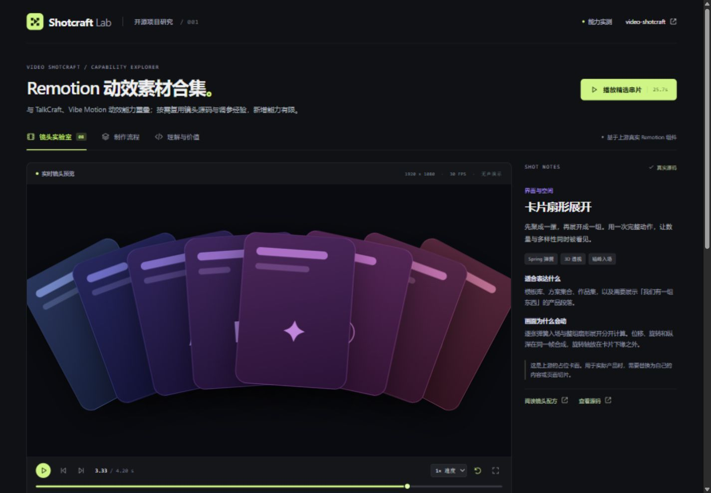
Video Shotcraft
Remotion 实现的动效素材合集，附镜头配方与制作流程。与已研究的 TalkCraft、Vibe Motion 能力重叠，主要价值在补充镜头源码与调参经验，新增能力有限。
让发布和运营接上。
BrightBean Studio
可自建的内容编辑、审核、定时发布、互动与统计后台，提供 REST/MCP。
支持 Facebook、Instagram、Threads、LinkedIn、TikTok、YouTube、Pinterest、Bluesky、Mastodon、DEV.to、Google 商家资料，共 11 个平台、13 种接入。
多数使用开发者应用凭证 + 账号授权；Bluesky 用应用密码，DEV.to 用个人 API key，Mastodon 自动注册 OAuth 应用。各平台能力受权限限制，本研究未连接真实账号。
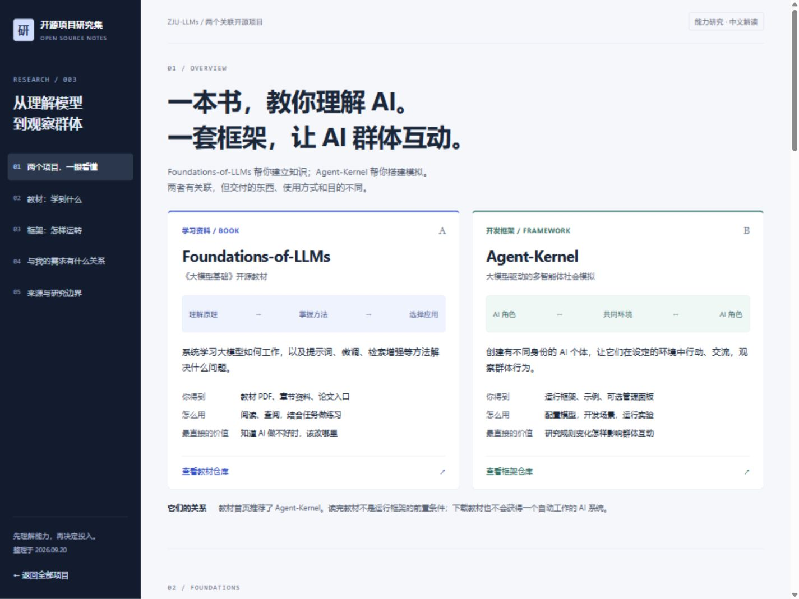
大模型教材与群体模拟
Foundations-of-LLMs 是大模型相关文档与教材；Agent-Kernel 是用 AI 模拟多角色交互的开发框架。
包含教材六大模块、多角色交互原理、效果呈现、能力总览图与六类产品方向。流程为教学示意，未运行上游模拟。
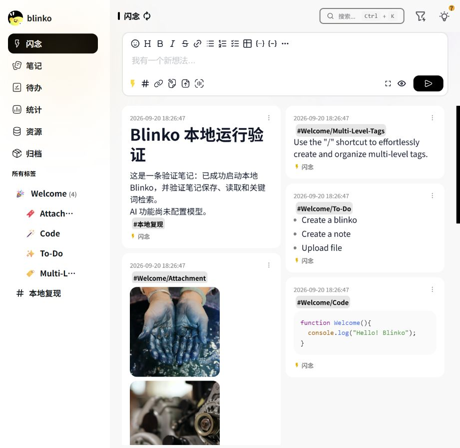
Blinko · 笔记记录软件
支持 Markdown 的笔记记录软件，可保存文字、链接、待办和附件，再围绕记录整理、检索、总结和问答。
与 ReflectFlow 在记录及基于记录的处理上有重叠。已本地部署并验证基础笔记功能，AI 尚未配置；封面为真实运行截图。
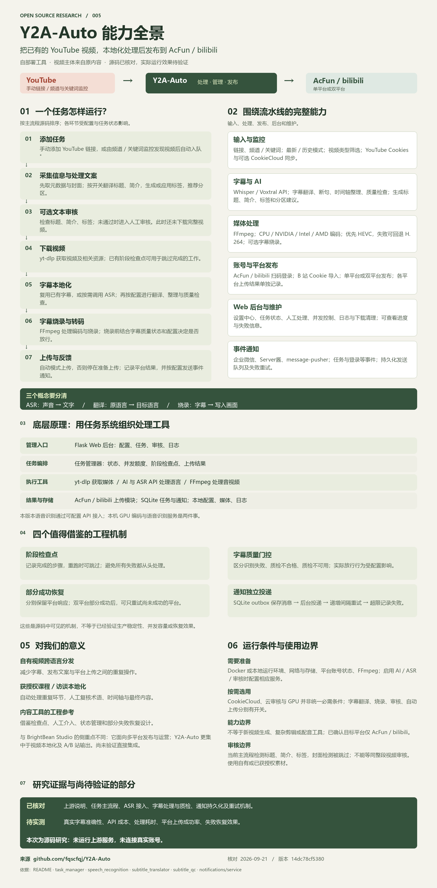
Y2A-Auto · 视频处理与 A/B 站发布
获取 YouTube 视频，经过字幕识别、翻译、烧录或转码等处理后，发布到 A 站（AcFun）或 B 站（bilibili）；支持单平台或双平台发布。
已按源码重新核对处理顺序、字幕质量门控与失败恢复。可点击流程查看输入和结果；上游服务尚未实测。
Leak Check · 数据关联与邮件盘点探索
已有个人信息库的查询后端：按电话、邮箱等精确匹配，提取共同标识，默认两轮查表后聚合脱敏；不实时搜索全网，也不附带作者数据。
我们的探索确认数据来源才是瓶颈，保留“用户授权历史邮件 → 注册与使用证据 → 账号盘点”的独立原型方向。原库可供实现参考；减少翻信、找回遗忘平台的实际价值仍待验证，邮箱适配暂缓。
电子书链接目录。
电子书目录 · 定位与设计
仓库保存书名、作者、分类和外部网盘链接，不包含书籍正文。对我们的直接价值较低；保留分类文件生成静态搜索页的实现参考。
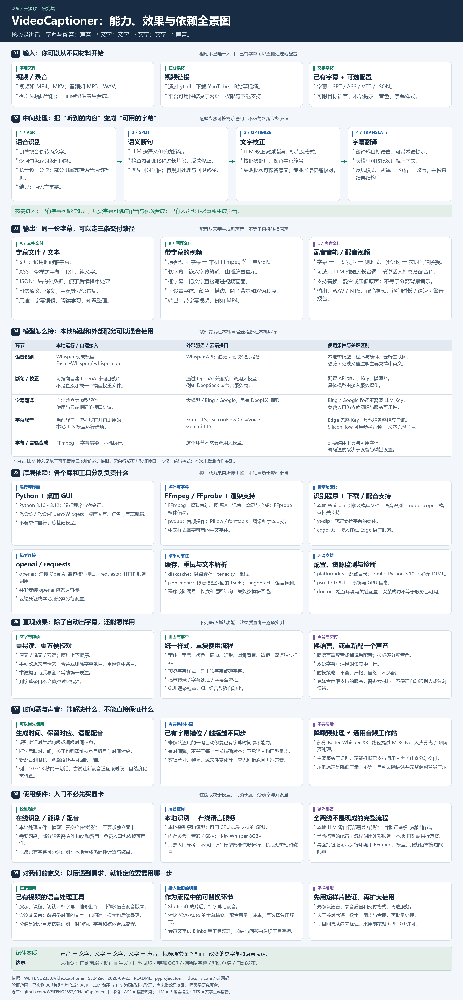
VideoCaptioner · 字幕与配音
把视频或录音中的讲话识别成带时间戳的字幕，再断句、纠错、翻译、配音并合成视频。
它串接现成语音模型、语言模型、TTS 与 FFmpeg，负责文字与时间轴对应、校验和交付。引导图展示完整能力、依赖与边界；本次实测字幕烧录，其他模型效果尚待验证。
JoyAI-Video-Edit · 视频内容改写
原视频加文字指令和可选参考图，生成编辑后的视频：替换人物形象、换装、转换风格、增删内容或更换背景。
官方案例可同步对照；两张引导图梳理分块扩散原理、显卡部署门槛、创意用途与验证边界。网页不运行模型。
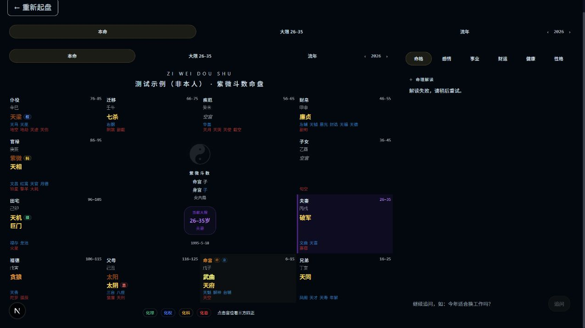
紫微斗数 · 源库实测与结论
以前端排盘展示为主，浏览器端可生成命盘；缺少可用的 AI 解读后端和完整业务逻辑。对我们的参考价值有限。
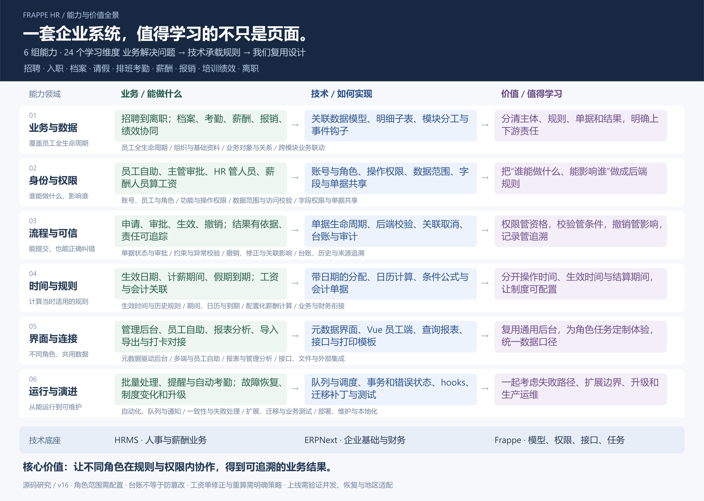
Frappe HR · 人事与薪酬系统
覆盖招聘入职、员工档案、请假考勤、绩效报销、培训、工资及离职的企业人事管理系统。
依托 Frappe / ERPNext 的数据模型、角色权限、审批流程、时间规则和报表，让员工、主管、HR 与薪酬人员在同一业务链上协作。对我们最有价值的是业务建模、权限隔离、流程联动与可扩展后台的实现范式。
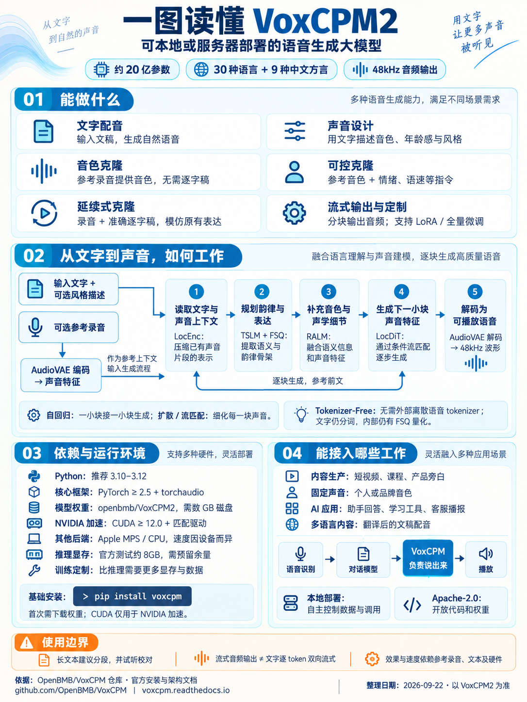
VoxCPM2 · 本地语音生成模型
可自部署的语音生成模型，支持多语言配音、声音设计和参考录音克隆。
用连续声音特征、自回归语言建模和局部流匹配合成语音；需要 Python、PyTorch、模型权重和相应运行设备。对我们是按需接入的配音组件与模型实现参考，当前无需单独建设产品。
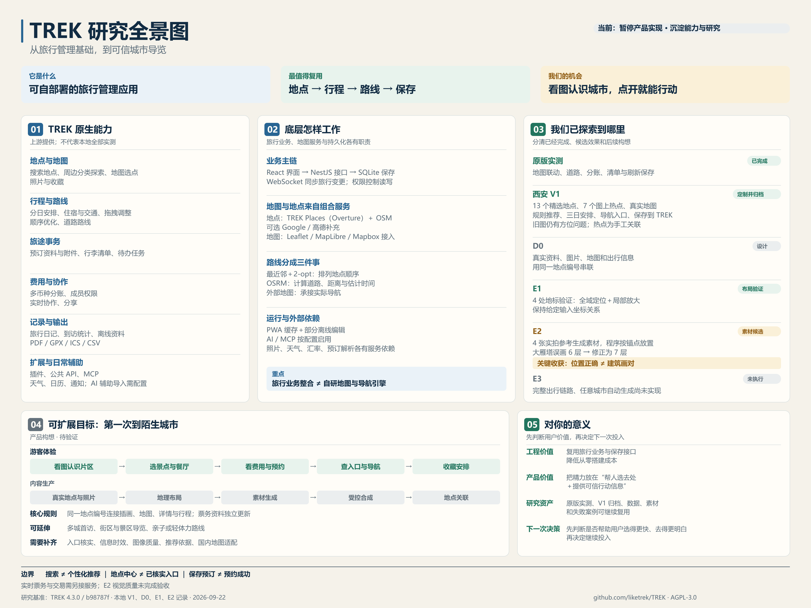
TREK · 旅行管理与城市导览
TREK 将地点、地图、行程、费用和协作组织为可自部署的旅行应用；React、NestJS 和 SQLite 连接旅行业务与外部地点、道路服务。
我们实测原版，做了西安 V1，并继续验证地理布局与参考生成素材。研究价值是复用旅行基础，探索可信的图像选点与出行引导；完整产品仍待验证。
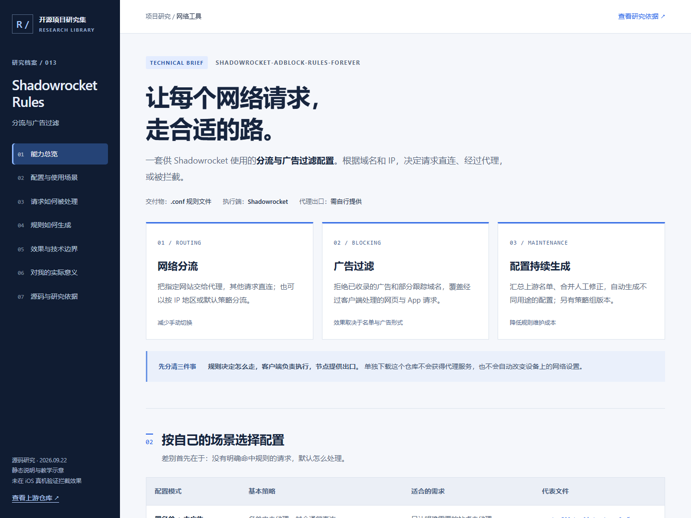
Shadowrocket Rules · 分流与广告过滤
把广告与分流名单整理成 Shadowrocket 配置：代理黑名单、直连白名单决定选路，广告名单用于拒绝请求。
包含可切换的请求处理示意、8 类配置对比与固定版本的源码依据。教学示意不进行真实代理连接，未验证 iOS 真机去广告效果。
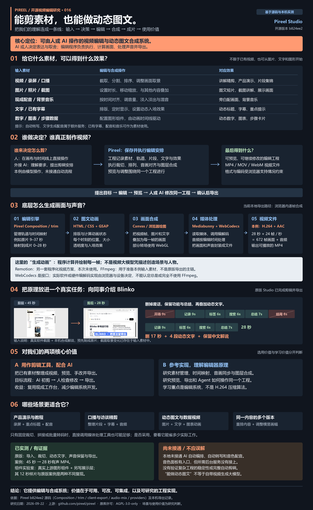
Pireel · 视频编辑能力全览
用可编辑时间线裁切视频、叠加图文、混合声音并导出；工程记录编辑决定，浏览器负责画面与编码。
接入 Agent 后，AI 也能修改同一工程。对我们既是剪辑工具候选，也是开发 AI 视频编辑产品的实现参考。
源库：video-shotcraft · brightbean-studio · Foundations-of-LLMs · Agent-Kernel · blinko · Y2A-Auto · 研究仓库 ↗